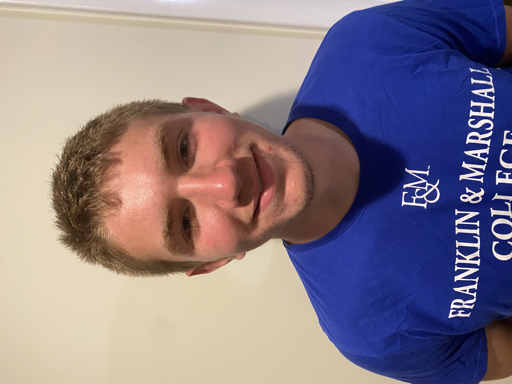

Kevin Nowoswiat Résumé

Summary:
I am a web developer that is currently looking for work in the machine learning/A.I. technology sector.
Education:
I am a graduate of Franklin and Marshall College with a bachelor's degree in Applied Mathematics and as well as earning a minor in Computer Science.
Work Experience:
YMCA Lifeguard
June 2018 - August 2018
- Oversaw the safety and well-being of all pool members of the West Chester area YMCA.
-
March 2020 - August 2020
- Assisted in the creation of a startup through varioius data gathering methods.
-
April 2023 - August 2023
- Was an important part of maintaining the day to day operations that went on around the golf club.
- Had to maintain good consumer relations as well as keeping the consumer morale high at all times.
Intern for Dow Capital Management
June 2021 - August 2021
- Aided in the decision making process of the firm through gathering and presenting relevant data to my superiors.
- Worked with Microsoft Excel to organize and analyze different sets of data.
Skills:
- Communication
- Work ethic
- Problem-Solving
- Critical thinking
- Leadership
Awards:
Hobbies
Contact